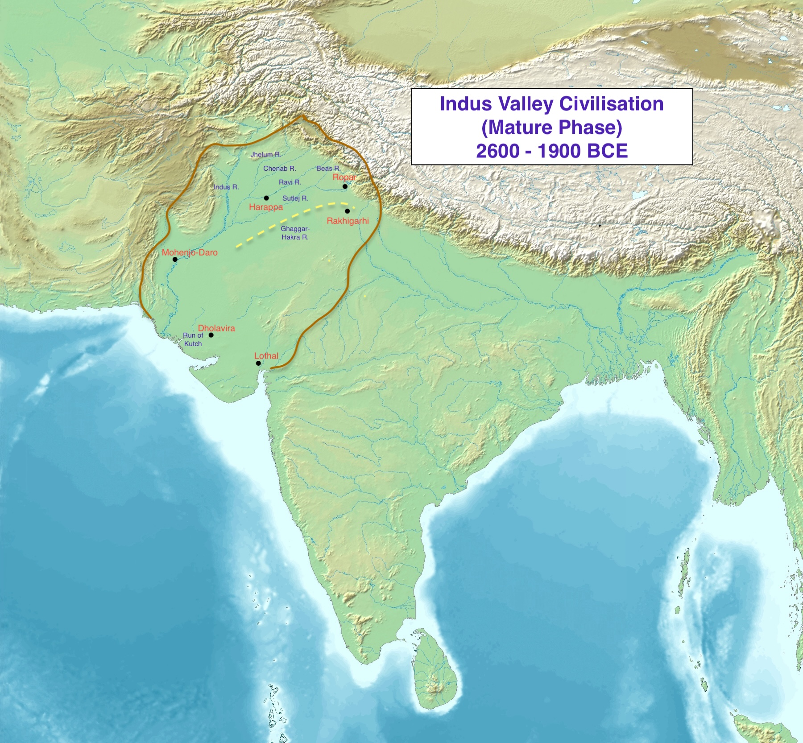
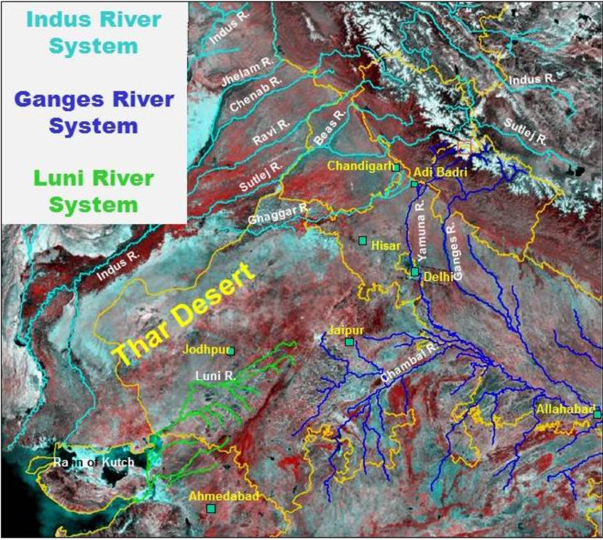
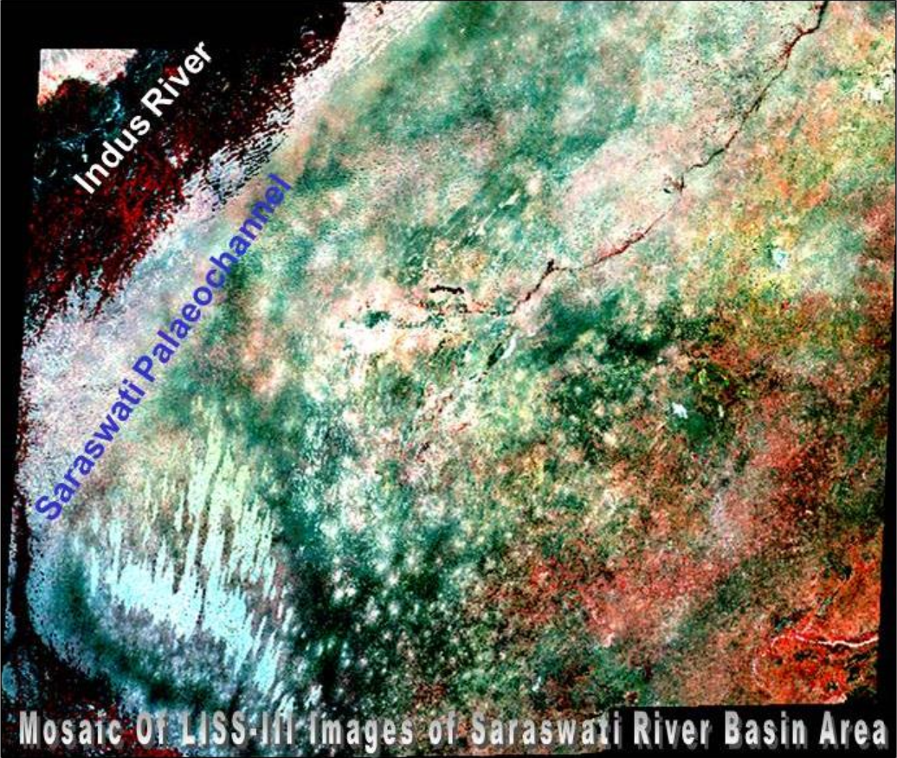
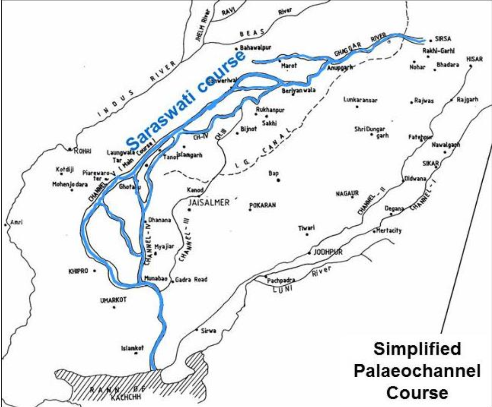
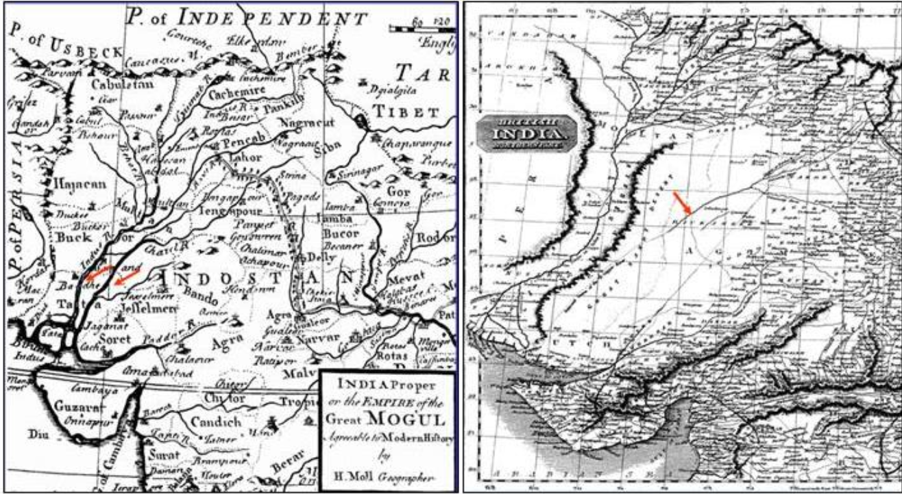
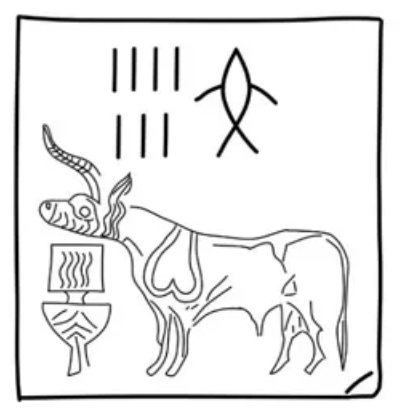
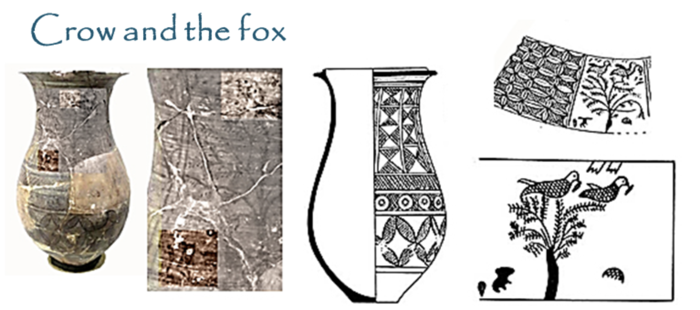
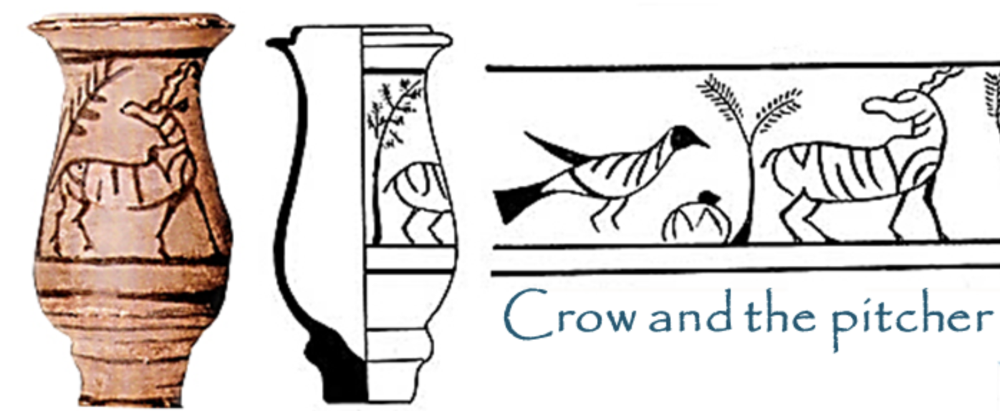

June 22 2026
Indus Valley Civilisation
In 1829, a deserter from the East India Company’s army,

The discovery of Indus Valley Civilisation, also known as Harappan Civilisation, was a mere serendipity. No one imagined that a pivotal chapter of Indian history lay dormant beneath immense layers of soil for millennia. This gigantic archaic culture, also a contemporary of Mesopotamian and Egyptian Civilisation, was the first example of urban society in South Asia during the Bronze age, which was even ahead of its subsequent chalcolithic (copper age) settlements in the Indian subcontinent. To summarise its 5000 years of history, we usually divide it into three phases:
- The Early Harappan Era (3300 BCE to 2600 BCE)
- The Mature Phase (2600 BCE to 1900 BCE)
- The Later Harappan Era (1900 BCE to 700 BCE)
Now there is no unanimity among the archeologists as to how and from where this civilisation actually started its journey towards its unforeseen future. But the most reasonable explanation would be that it was some indigenous villagers in the Hakra river basin from the neolithic period who planted the seed of this civilisation. Now, to understand how it became an imperative part in Indian History or how this living society dissipated into its apparition, we need a comprehensive idea of how it reached its acme in the Mature phase and then how this burgeoning civilisation started to dig its own grave during the Later Harappan Era.
The Origin
It’s safe and convenient to infer that some indigenous group of people from the Indus Valley region, who was sagacious in administrating their people and aware of their cultural identity, was the architect of this great civilisation. But who were they? And where did they come from? The answer is inextricably related with the inception of the Neolithic Era in northern India, around 8000 BCE. The transition from Mesolithic age (middle stone age) to Neolithic age (new stone age) was itself revolutionary in nature. Innovations in tools (more sharp and polished), the beginning of agriculture, invention and use of pottery made the human settlements more stable and self-sufficient. That is why we see the emergence of small villages in North India during this period.
There is another origin story of Harappan people that tied them to more western regions of Asia. It’s archeologically and genetically proven that some new Iranian agriculturists migrated from the present day
The Spring
Generally the term “Harappan Civilisation”, or “Indus Valley Civilisation” refers profoundly to the mature phase of it. Urban settlements, sophisticated city planning, trade routes with Egypt and Mesopotamia evolved in this period. The area it covered during this phase was triangular in shape and the largest among the coeval civilisations. It extended from Kashmir in the north to Maharashtra in the south, and from Baluchistan in the west to Uttar Pradesh in the east. The towns were mostly divided in two parts: the
Nevertheless, from every aspect the civilisation was unique and was flourishing as the corner-stone of Indian civilisation. But then something happened, the burgeoning civilisation was gradually enervated by the flow of time. People forgot to mention “Meluhha” in their text, Harappan people forgot to make seals, they just suddenly vanished in the air.
The Invasion
Around 4500 BCE, in the grasslands of modern day Ukraine, Southern Russia and Kazakhstan, another pastoral settlement was obscurely preparing to rule over a whole continent. They are called
Again around 2000 BCE, another group of Pontic-Caspian Steppe settlements decided to go to the east, moving into the Ural Mountains and then they reached Iran and between 1600 BCE - 1000 BCE they finally reached the north western part of India. They established their civilisation in the fertile land of Sapta-Sindhu Valley and became the cynosure of Indian sub-continental history. Their civilisation is called the Vedic Civilisation and they called themselves the
Now from the timeline it is convenient to presume that during 1600 BCE when Harappan Civilisation was thriving across north western India, those Pontic steppe people invaded through western India and abhorrently effaced Harappan Civilisation. The violent nature of the steppe people also supports the Aryan Invasion theory. But there is a profound fissure in the theory. Archeology and genetics don’t support the invasion. As already mentioned, in the Harappan sites, there is no evidence of direct large scale war or any proof of genocide and mass destruction of public properties. Even genetics is not congenial to the invasion theory. Unlike the European Continent, where almost 90% of the indigenous Y-chromosome were either wiped out or replaced by the invaders, in the Indian mainland the indigenous DNA (Haplogroup - H) was not exterminated by the newcomers. It is like Aryans didn’t face any huge restriction from the mainland people of India.
So, the question remains, if not the Aryan Invasion, then what exactly happened to the Harappan Indigenous people?
The Dearth
Saraswati’s name appears for 70 times in Rigveda. But its description is a little sceptical. The early texts, specifically the books 6 & 7 of the Rigveda describe Saraswati as a massive, perennial river. It says –
“With her impetuous flow, she has fractured the mountain ridges, akin to a seeker of lotus stems. Through laudation and sacred chants, let us invoke the protection of Saraswati, whose power strikes those upon the far shores.” — Rigveda 6.61.2
But the later vedic texts and the book 10 of Rigveda describes Saraswati as a smaller river that flows from mountains to a “samudra”, silently positioned between Yamuna and Sutlej. The river that was once invoked as the mother of rivers, later lost its imperial status from the Hindu texts. Later Vedic texts, like Brahmanas, Sutras, describe Saraswati as a mythical goddess. Even some texts mentioned the disappearance of Saraswati –
“Positioned below the Himalayan peaks and above the Vindhya ranges, stretching east from the Vinasana—the very site where the sacred Saraswati dissipated into an apparition—lies a region of historical significance...” — Vasistha Dharma Sutra 1.8
These texts persuasively indicate a decline in Saraswati’s water volume in the later Vedic age. But we can’t be certain about that, because Hindu texts are famous for their mythological imaginations. Those are a mixture of reality and metaphors. We need solid proof.
The Search
In the northern plains of Haryana, a small river, originating from Adi Badri, flows obscurely through the upper Ghaggar river basin during monsoon. It passes through Bilaspur, Mustafabad, Thanesar, Bibipur and Pehowa and ultimately merges with river Ghaggar near Rasauli village in Punjab. Local people call this river

On 28th November 2015, ISRO published a watershed research article on Saraswati river,

The Irony of Fate
Scholars are convinced that not a single phenomenon but a sequence of events contributed to the desiccation of river Saraswati. Their works are based on different aspects pertaining to climate change, tectonic disturbance, drainage changes etc. Summarising the existing research, it can be said that the following natural events finally caused the disappearance of Saraswati:
- Yamuna and Sutlej were the main tributaries of Saraswati. Tectonic studies show that considerable tectonic activities in the Himalayan mountains continued during the mid-Holocene epoch (5000 - 3000 BCE). These tectonic disturbances caused the diversion of Yamuna and Sutlej. Most notably, the diversion of the Sutlej at Ropar cut off a massive volume of water, severely crippling the flow of the Saraswati.
- Another meteorological research on palaeo climate and oxygen isotopic studies indicate that during the late-Pleistocene (about 15000 years ago) age this region, Ghaggar-Hakra River basin and Thar Desert, had enjoyed a verdant climate with heavy rainfall and recurring floods. But gradual change in climate, dry weather and increasing aridity imperiled the flow of maximum North-western rivers and finally erased the mighty Saraswati.

Taken together, these findings provide compelling evidence that the Ghaggar-Hakra river basin is actually the apparition of imperial Saraswati and it was the irony of fate that metamorphosed it into a little river of Haryana.

The Final Chapter
When the first settlements were taking place around the Ghaggar-Hakra river basin in the Mesolithic period, the lands were fertile, rivers were perennial and air was humid. Gradually the region had been populated by more human settlements during the Neolithic age that finally led to the establishment of Indus Valley Civilisation. Mohenjo-daro beside river Indus, Harappa beside Ravi, Rakhigari, the largest settlement of IVC, and Kalibangan beside Ghaggar-Hakra river channel, Banwali beside Rangoli river, Dholavira beside Luni river were the most prominent and populated sites of Harappan Civilisation. Their economy was largely agriculture dependent and the agriculture was based on the flood basins. In the Later Harappan Phase when the Saraswati and its tributaries started drying up, their agriculture was affected and with the increasing aridity in the air the place became inhabitable for the Harappan People. Even it is noticed that the trade with the Mesopotamian civilisation was severely disrupted in this period. Consequently, the twin coercion of agricultural collapse and declining trade disrupted the Harappan way of life, ultimately compelling them to abandon their urban centers. By 1600 BCE, when Aryans were migrating from Iran to the northern part of India, the Harappan cities were already barren and they didn’t face any kind of resistance from the indigenous people of that land. The sacred land that provided food to the Harappan people and planted the hope of a great civilisation, beguiled them, forced them to forget their own culture. With the flow of time, they were forgotten, their cities were buried under the sand, their seals and technologies were anachronism for successive years. But where are they now? With their cities, were they also obliterated from earth?

Bedtime stories narrated by grandparents are memorable moments of childhood. Their stories contain allegories and moral lessons. For instance, the popular story of a clever crow that used pebbles to drink water from a narrow-mouthed pitcher, or the story of a shrewd fox who artificed a crow to get a piece of meat. Astonishingly, archeologists found a miniature terracotta jar and vase paintings from the city of Lothal, portraying those famous stories. This is the indirect proof that the Harappan fables eventually passed to mainstream India and are still surviving for centuries through the bedtime stories. Another evidence comes from Dravidian culture. Dravidian literature is famous for homonyms or Rebus principle, largely popularized by

The evidence is everywhere, woven invisibly into the fabric of our daily lives. When the patriarchal, hegemonic Steppe pastoralists, the Aryans, migrated into the Sapta-Sindhu, they succeeded in claiming the land, but they could never overpower its profound local philosophy. Unlike the cataclysmic migrations into Europe, where indigenous cultures were decisively desecrated and erased, the meeting of worlds in the Indian mainland evolved into a silent, centuries-long dialogue. The patriarchal, male-deity-driven worldview of Indra and Varuna coexisted with the deep, matriarchal, mother-goddess-centered philosophy of the Indus. In the end, the nurturing spirit of “Sindhumata” softened the hearts of the incoming nomads. The civilization that seemingly ended its physical journey millennia ago, due to a relentless natural apocalypse, was never truly obliterated; it merely shed its brick-and-mortar skeleton to live on through our stories, our art, and our enduring philosophy. The living, breathing vestige of that ancient world is we, the people of India, who look at our soil and still choose to call it “Bharatmata.”

Further Reading
For comprehensive read on the search of Saraswati,
For lifestyle and religion of IVC read,
*“RIVER SARASWATI: AN INTEGRATED STUDY BASED ON REMOTE SENSING & GIS TECHNIQUES WITH GROUND INFORMATION” published by ISRO. **https://karkanirka.org/2020/05/06/travel-of-kakka-and-vadai-from-indus-valley/